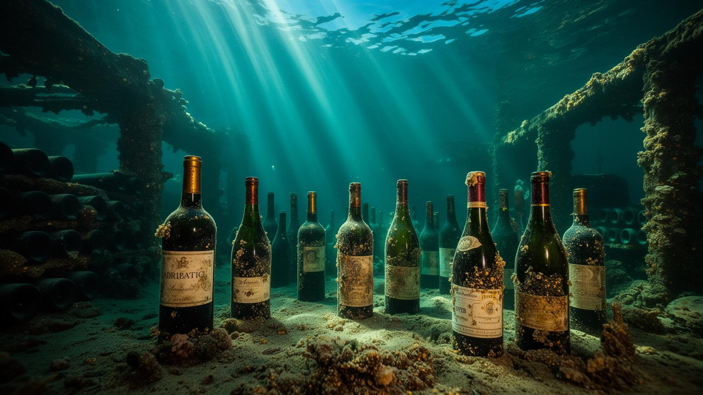
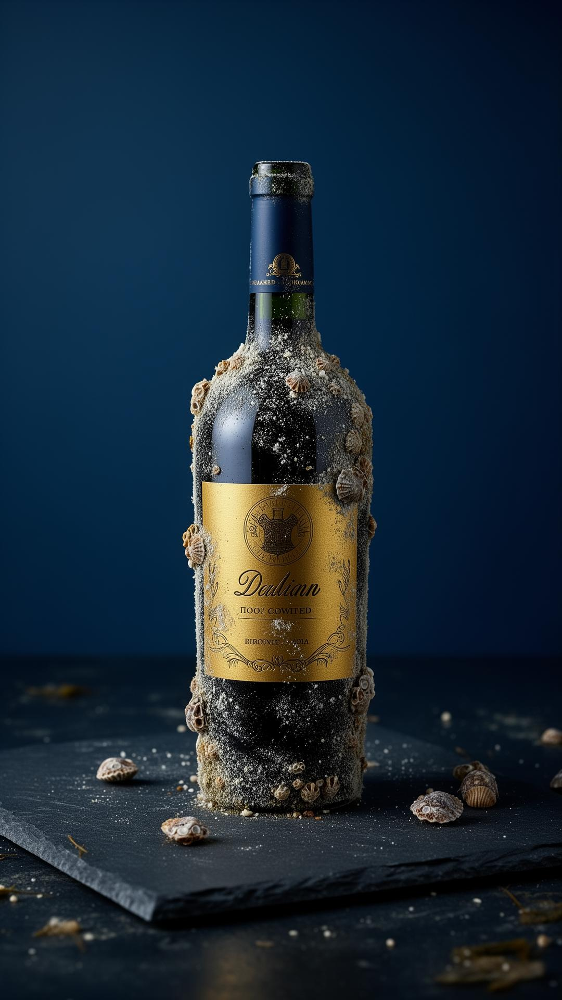
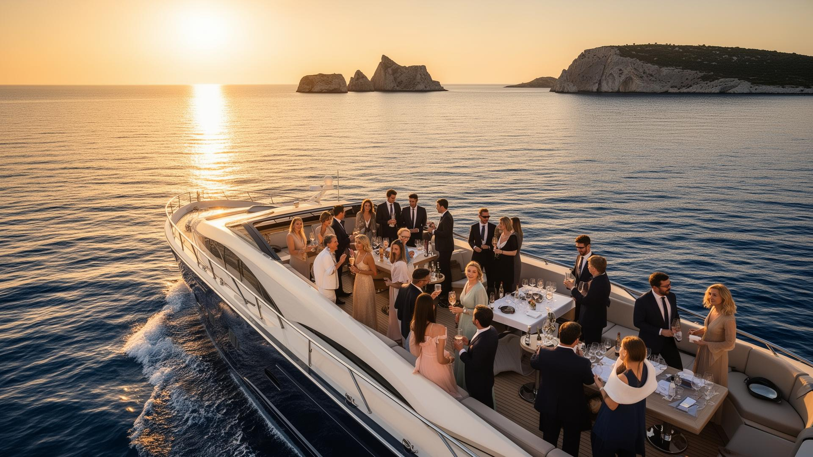
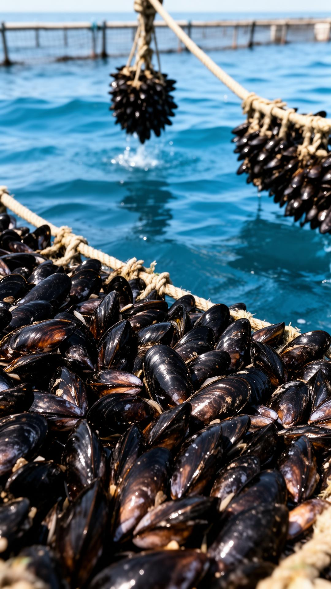
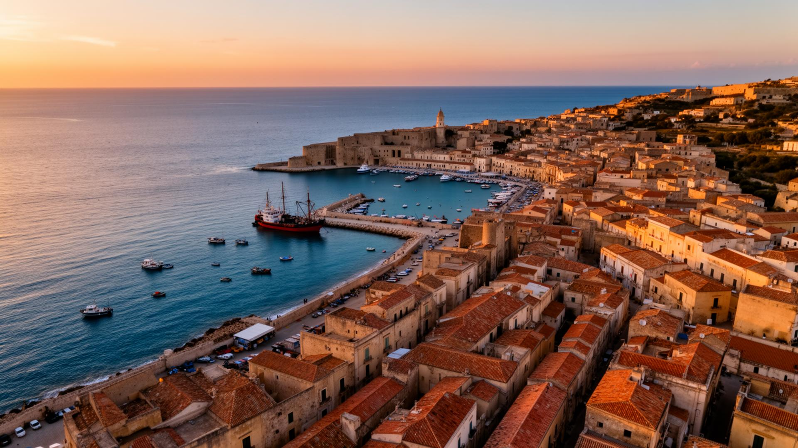

La prima cantina di affinamento subacqueo dell'Adriatico centrale. Seimila bottiglie di vino e tremila di olio extravergine riposano nel silenzio degli abissi, dove la pressione costante e la temperatura immutabile scolpiscono profili sensoriali irripetibili.
Tre mondi, un'unica narrazione: la maricoltura che nutre, la cantina che affina, l'imbarcazione che racconta.
Cassiopea nasce da una concessione marittima storica al largo di Termoli, dove millesettecento tonnellate di mitili crescono ogni anno. Tra le linee di allevamento, a diciotto metri di profondità, abbiamo costruito una cattedrale sommersa. Un luogo dove il tempo si misura in correnti.

Strutture in CLS sovradimensionate, certificate inerti, ospitano le nostre selezioni in un microclima costante: 14°C, pressione di due bar, oscurità assoluta, micro-vibrazioni indotte dalle correnti. Il risultato è un affinamento che la terraferma non può replicare.
Dodici ospiti. Un capitano, uno chef stellato, un sommelier subacqueo. Sei ore di navigazione tra concessione, cantina e Isole Tremiti.

Porto storico di Termoli, all'alba. Brioche e prosecco di benvenuto.
Visita guidata all'impianto di mitilicoltura. Degustazione fresca.
Recupero a vista delle bottiglie. Apertura cerimoniale a bordo.
Ancoraggio a San Domino. Pranzo gourmet di sette portate.
Un consorzio storico, millesettecento tonnellate l'anno, certificazione Friend of the Sea. È la radice viva del progetto Cassiopea: economia circolare, biodiversità, territorio.


Nessuna cantina sommersa entro quattrocento chilometri. Barriere d'ingresso altissime — concessioni demaniali, autorizzazioni, know-how subacqueo. Un moat competitivo difficilmente replicabile, costruito sul mare.
Investitori istituzionali, distributori premium, ospiti privati. Scriveteci per ricevere il dossier completo o per riservare la prossima navigazione.